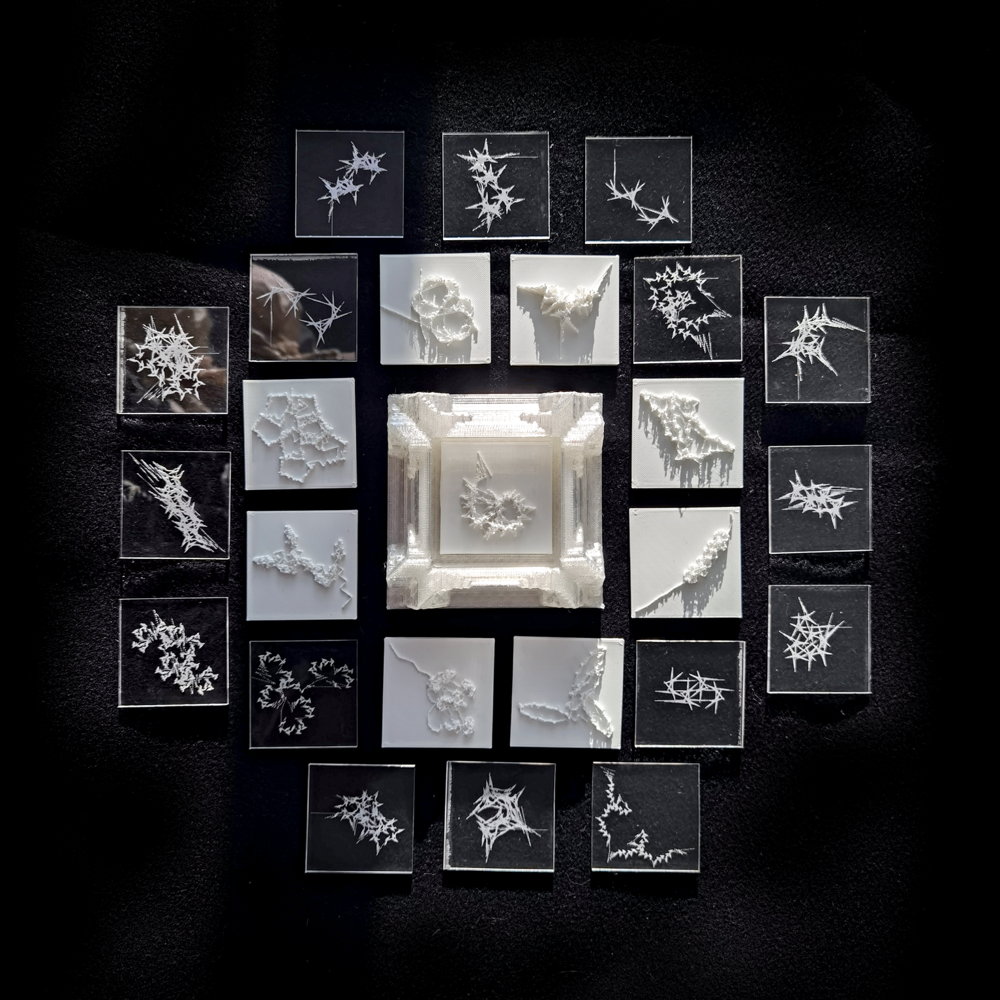

Computational From And Process:
Random Fractal Generator and Virtual Plant Specimens
April 2023
Web Interation + 3D Pringting + Laser cutting
Click here to play
Inspired by the Ediacaran biota fossils, I employed fractal and recursive algorithms in p5.js to generate a series of plantlike forms, which I then mapped to 3D physical artifacts. In addition, I created an audience-oriented web page, transforming all the parameters needed to generate these forms into an interactive GUI. I utilized CSS to style and adjust their appearance, and integrated all buttons, sliders, and fractal branches as separate classes, paving the way for further development. And with responsive design using CSS, they look great on mobile too.
Throughout this practice, I have gained a wealth of knowledge. Initially, I had no experience with 3D modeling, which making my starting point quite low. Over this month, I began learning how to use Blender, starting with donuts tutorial and attempting to generate complex and visually stunning large-scale 3D fractals using intricate geometry nodes. However, due to time constraints and my limited understanding, I failed a lot in accomplishing this task.
Subsequently, I decided to return to my theoretical research focus, which is the simulation of living organisms, and build upon my existing skills. I modified the code for the fractal trees to retain the last transformation for each iteration. This approach resulted in a range of unpredictable yet rich and engaging effects as the angle changed. These effects stemmed from the drawing state stacking that occurred between each recursive call.



References
https://editor.p5js.org/huichuan1999/sketches/-KharT_UC
https://natureofcode.com/book/chapter-8-fractals/
https://thecodingtrain.com/challenges/15-object-oriented-fractal-trees
https://www.youtube.com/watch?v=zrBJ4PV3Bf4&list=LL&index=4
https://www.youtube.com/watch?v=tdbaIHjCKtA&list=LL&index=34
https://www.youtube.com/watch?v=587qclhguQg&list=LL&index=36